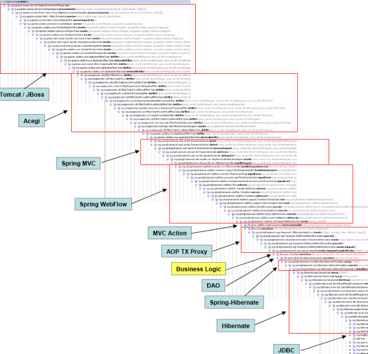

Designing Object-Oriented Software with
SOLID
Principles


The Ugly
Multiple solutions to the same problem
Pragmatism
Dogmatism
Object-Oriented Goals
Cohesion
High
Responsibilities are few and intimately related
Methods act on same state or are somehow connected
Promotes encapsulation (beware of ease of testing)
Low
Responsibilities are many and/or not so related to each other
Some methods work with different state
Indicates complexity. Candidates to be split
“Propietary Software is Injustice.”
Richard Stallman
Coupling
Measure of how a component (class/package) depends on other components
not avoided ad-infinitum; managed, instead
Low loose, weak
Interaction between a limited number of components
Changes in loosely coupled components do not propagate
Fosters reuse. Watch unnecessary complexity
High tight, strong
Interactions are spread all over the place
Changes in "remote" places propagate themselves
Elements are difficult to understand in isolation
Encapsulation
Hiding details that are likely to change
Separation is King
abstraction / implementation
data / behaviour

Law of Demeter
- container object
- a parameter
- a member variable/property
- objects created within
Within a method
- encapsulation broken
- coupling increased
- cohesion lowered
The Bad
Rigidity
Tendency of a program to be difficult to change
Changes propagate to dependant modules
Estimations blow up and fear of change installs
Fragility
Changes break unrelated code
Fragile code is an usual guest of the bug list
Immobility
Impossibility of logic reuse
too much effort and risk in separating parts for reuse and, therefore,...
...no logic is ever reused
Viscosity
doing things the right way becomes much more expensive than hacking
also presents itself when the enviroment "gets in our way" too often
"Non-design-preserving-changes" (hacks) proliferate and good engineering practices stop being performed
Opacity
a system is hard to read and understand
code is written in an unclear and convoluted way
hard-to-come-back code becomes a candidate for rewriting
Nedless
Complexity
codebase contains infrastructure that adds no immediate value
code carries dead weight that would never pay off carrying
Repetition
code maintains repeating structures instead of sound abstractions
C&P Programming leads to duplication of bugs
The Good
Single
Responsibility
Principle
a class should only have only one reason to change
Open
Closed
Principle
software entities should be Open for extension but Closed for modification
when features change
Do add new functionality
Instead of change existing ones
no change === no break

polymorphism + abstractions
Liskov
Subsitution
Principle
If for each object o1 of type S there is an object o2 of type T such that for all programs P defined in terms of T, the behavior of P is unchanged when o1 is substituted for o2 then S is a subtype of T
derivatives must be sustitutives for their base types
Subclasses must live up to the expectations set for their parents
downcasting
NotImplementedException
Interface
Seggregation
Principle
A client should not depend on interfaces it does no use
promotes use of cohesive and focused interfaces
isolates clients from changes in the abstraction
Dependency
Inversion
Principle
Depend upon Abstractions, not Concretions
tackles rigidity
degradation is often due to poor management of dependencies
change of direction of dependencies comes natural in proper object-oriented code
crash the "abstraction party" when the component is stable

Low Coupling
OCP, DIP, ISP
High Cohesion
Same as low coupling + SRP, LSP
Encapsulation
SRP, LSP, DIP